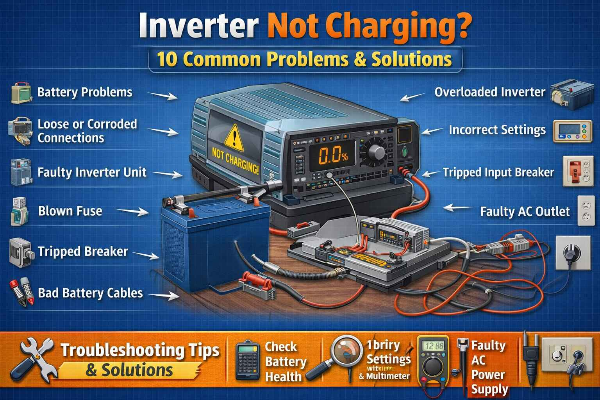

A family from Sibi called me in August 2014. The temperature was 50 degrees. They said "Our Crown inverter is not charging. We have no lights at night. The battery is new but the inverter shows no charging." I asked them to check the input MCB. They found the MCB was tripped. They reset it. The inverter started charging. The father said "We were about to buy a new inverter for 20,000 rupees. You saved us so much money."
Brand: Crown | Fix: Reset tripped MCB
Inverter not charging? In Pakistan, where load shedding is common, a non-charging inverter means no backup power during outages. Before calling an expensive technician, check these 10 common problems. Many charging issues have simple solutions you can fix yourself.
First Thing to Check: When inverter is not charging, first check if mains power is available. Is the input MCB on? Is the wall socket working? Check if the inverter display is on and showing any error codes.
A hotel owner from Gilgit called me in October 2018. He said "My Homage inverter is not charging. The battery terminals have white powder on them. What should I do?" I told him to clean the terminals with baking soda and hot water. He cleaned them. The inverter started charging again. He said "I have 5 inverters in my hotel. Now I know how to maintain them properly. Thank you for teaching me."
Brand: Homage | Fix: Clean corroded battery terminals
Problem: No input power reaching the inverter. This sounds obvious but is often overlooked.
Symptoms: Inverter running on battery, no charging, display shows no AC input.
Solutions: Check if mains power is on in your house. Check the MCB for the inverter and reset if tripped. Check the wall socket with another device. Check the input fuse on the inverter if accessible.
Problem: Loose or corroded battery terminals prevent proper charging.
Symptoms: Inverter works but battery does not charge, or charges intermittently.
Solutions: Turn off the inverter and disconnect from mains. Check battery terminals for tightness. Look for white or green corrosion. Clean corroded terminals with baking soda and water. Tighten all connections securely.
A school teacher from Turbat called me in June 2020. He said "My Super Asia inverter is showing E02 error. The battery is only 2 years old but it is not charging." I asked him to check the battery voltage. It was only 9 volts. The battery was deeply discharged. I told him to use an external charger to bring the voltage up. He borrowed a charger from a friend. After charging for 6 hours, the battery reached 12 volts. The inverter started charging normally. He said "I thought I needed a new battery. You saved me 12,000 rupees."
Brand: Super Asia | Fix: External charger for deeply discharged battery
Problem: Battery is deeply discharged and the inverter will not charge it. Some inverters have protection that prevents charging below a certain voltage.
Symptoms: Inverter shows low battery, will not charge, or clicks repeatedly.
Solutions: Check battery voltage with a multimeter. For a 12V battery, if it is below 10.5 volts, it may be too low. Try charging with an external charger if available. If the battery will not hold a charge, it may need replacement.
Problem: Input MCB tripped or input fuse blown, preventing charging.
Symptoms: No power to inverter, display off, or shows no AC input.
Solutions: Check the MCB on the inverter or in your distribution box. Reset it if tripped. If it trips again, there is a short circuit. Check the input fuse on the inverter. Replace the fuse if blown with the same rating.
Problem: The battery has reached the end of its useful life. Most batteries last 3 to 5 years.
Symptoms: Battery will not hold a charge, runs for a very short time, inverter beeps frequently.
Solutions: Check the battery manufacturing date. If it is over 4 years old, replacement is likely needed. A new battery costs between 8,000 and 15,000 rupees depending on capacity.
A government employee from Zhob called me in July 2016. He said "My ATS inverter is not charging. The inverter feels very hot and the fan is not running." I asked him where the inverter was installed. He had put it in a small storage room with no windows. I told him to move it to a ventilated area. He moved it to the living room. The fan started working. The inverter started charging. He said "Such a simple solution. I was about to call a technician from another city."
Brand: ATS | Fix: Move inverter to ventilated area
Problem: The inverter overheats and stops charging to protect itself.
Symptoms: Inverter is hot, stops charging, shows an error code like E05, fan runs loudly.
Solutions: Ensure the inverter has proper ventilation with at least 6 inches of clearance. Check if the cooling fan is working. Reduce the load on the inverter. Clean dust from the vents. Let the inverter cool down for 30 minutes.
Problem: The charging circuit inside the inverter has failed.
Symptoms: Mains power is available, but battery voltage does not increase when charging should happen.
Solutions: Measure battery voltage with a multimeter when mains is on. It should read 13.5 to 14.5 volts for a 12V battery while charging. If the voltage stays at battery level (12.6 volts or less), the charger is not working. This usually requires professional repair.
Problem: Battery plates become sulfated from undercharging or age, reducing capacity.
Symptoms: Battery drains quickly, does not charge fully, inverter runs for a short time.
Solutions: Check the battery age. Try an equalization charge if your inverter supports it. Check the specific gravity with a hydrometer if accessible. If the battery is old, replacement is the best option.
A shopkeeper from Kalat called me in March 2022. He said "My PEL inverter is not charging. The display shows E06 error. The battery is only 1 year old." I asked him to check the mains voltage. He measured it and found only 150 volts. The voltage was too low for the inverter to charge. I told him to install a voltage stabilizer. He bought a stabilizer for 5,000 rupees. The inverter started charging normally. He said "Now I understand why my inverter was not working."
Brand: PEL | Fix: Install voltage stabilizer for low mains voltage
Problem: Mains voltage is too low for the inverter to charge properly. This is very common in many areas of Pakistan.
Symptoms: Inverter does not charge when mains is available, or charges very slowly. Error codes like E04 or under voltage may appear.
Solutions: Check the mains voltage with a multimeter. If it is below 180 volts, the inverter may not charge. Install a voltage stabilizer. Contact WAPDA if the voltage is consistently low.
Problem: Internal components like MOSFETs, relays, or the control board have failed.
Symptoms: Inverter shows various error codes, will not charge, may make clicking sounds.
Solutions: Note any error codes displayed. This requires professional repair. The cost is between 2,000 and 6,000 rupees depending on the fault.
| Battery Status | 12V Battery | Action |
|---|---|---|
| Fully Charged | 12.6 - 12.8V | Normal |
| 75% Charged | 12.4V | Can charge |
| 50% Charged | 12.2V | Needs charging |
| 25% Charged | 12.0V | Charge soon |
| Discharged | 11.8V | Needs immediate charge |
| Dead / Sulfated | Below 10.5V | Replace battery |
Pakistan Specific Tips: Voltage fluctuations can damage the charger circuit. Use a stabilizer. Frequent load shedding causes deep discharges that reduce battery life. Consider solar panels. In many cities, use only distilled water for battery topping. Keep inverter vents clean to prevent overheating. Check for rodent damage to wires, which is very common.
Battery Safety Warning: Batteries contain sulfuric acid and produce explosive hydrogen gas. Always work in a ventilated area. Wear eye protection. No smoking or sparks near batteries. Never short battery terminals.